島根県出雲市稲岡町37番
更新日 : 2026/08/15
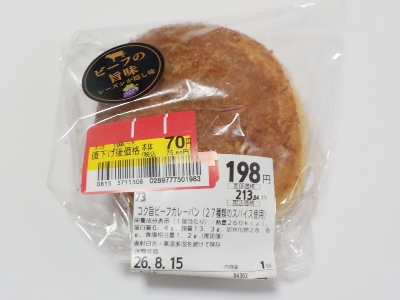
レーズンが隠し味とか、27種類のスパイスとか書いてありました。甘めのカレーも美味しいけど、揚げパンのパン粉の感じが一番美味しかったです。
いろんなタイプのカレーパンがありますが、パン粉がパンらしい味してるのって美味しいですね。
パン粉とパンと油の相性が良く、すごく旨味を感じました。とっても安く買いましたが、とっても美味しい商品でした。
更新日 : 2025/09/27
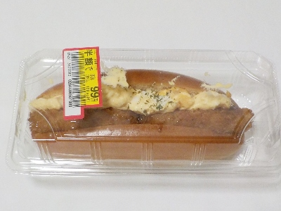
買い物してて、普通に食べたいって思って買いました。
マヨネーズ味のたまごとコロッケの組み合わせがとっても美味しい。普通のコッペパンなところもシンプルで良かったです。
こんな感の惣菜パンは軽い感じが一番だなと思いました。
パン屋さんで変に凝った高級な総菜パンがよく販売してますが、そういうのって好みじゃないんだよな。
更新日 : 2025/01/12
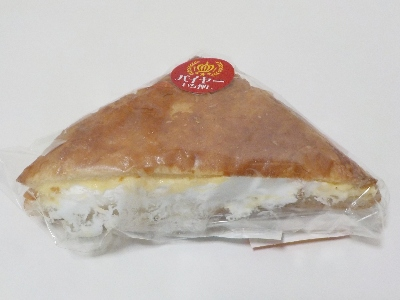
クリームがたっぷりであふれちゃってますね。クリームが多いのはうれしいです。
（カスター）となっていますが、あまりカスタード風味はなくてホイップクリーム味が強かったです。カスタード風味フラワーペーストが少なめだったのかな？
クリームがたっぷりなので満足感が高かったです。以前にあったマリトッツォをマーガリン強めにした感じかなと思いました。
更新日 : 2023/12/10
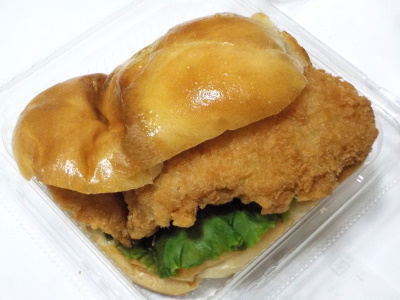
白身フライが大きいのを選んで買いました。たくさんフライがみ出してます。
タルタルソースは中央にあるので、外側はシンプルな白身魚のフライ味が楽しめました。
ソースが少いのもなかなかいいですね。
更新日 : 2023/01/08
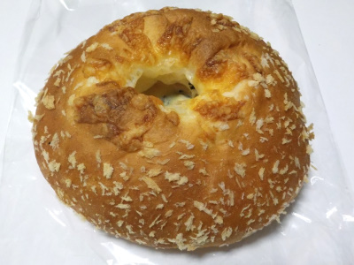
カニクリームグラタン風パンです。グラタンを久しぶりに食べました。グラタン美味しかったです。
グラタンは食べてる途中で飽きることがよくあるので、私はこれくらいの量が丁度いいって思いました。
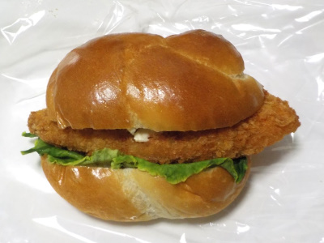
フィッシュバーガーです。たまたまかもしれませんが、タルタルソースが少なかったです。なのでとってもあっさり味でした。
甘いパンの味がよく分かりました。
更新日 : 2022/07/02
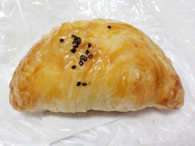
スフォリアテッラはイタリアの焼き菓子で、貝の形をしたパイらしいです。
どこかで流行っているのかな？
この商品はリンゴパイとスイートポテトパイが合体した感じで、1つで2つの味が楽しめました。
両サイドがサツマイモで真ん中がリンゴです。リンゴは角切りで大きめのカットだったので、果肉感があって美味しかったです。
さつまいもは甘いので、パイ饅頭を食べてる感じがしました。
秋っぽい商品ですけど、美味しいので夏でもいいかな。
2022/02/22
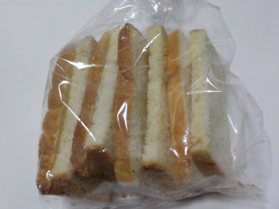
薄切りの食パンで作ったシンプルなシュガーラスクです。普通に食パンの味と砂糖の味がしておいしい。
味付けが濃くないのと、パンのカットが大きいのがいいかな。
隙間なく入っているので、これ1袋で554カロリーもあります。サクサクで軽くて食べやすいですが、食べ過ぎないようにいましょう。
更新日 : 2021/12/31
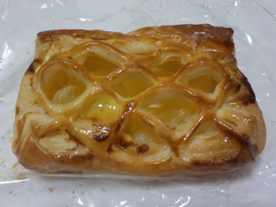
見た目が綺麗なアップルパイです。美味しそう。
リンゴはジャムじゃなくて、ちゃんと固まりがあっていい食感がありました。
果肉感があって美味しかったです。
更新日 : 2021/11/24
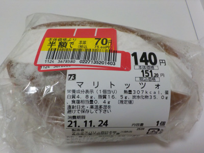
半額パンを買いました。SDGsな感じで食品ロスをなくそうとかは思ってないです。
お買い得な感じで買っています。
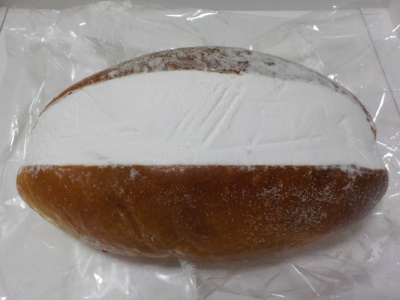
ホイップクリームたっぷりパンですが、表面が粉砂糖でコーティングされているので袋に付かなくなっています。
よく出来てます。感心しました。
マリトッツォって言ってもパンとホイップクリームと砂糖のシンプルなパンです。なんとなく薔薇パンみたいで懐かしい味だなーと思いました。
ホイップクリームが好きなので、流行じゃなくて定番化して欲しいです。
【おいしいものを食べよう。】【たくさん寝よう。】
【ソロ活をしよう!】【季節感のあることをしよう。】【動画視聴はほどほどに。】【当サイトの全てのコンテンツは無断転載禁止です。】